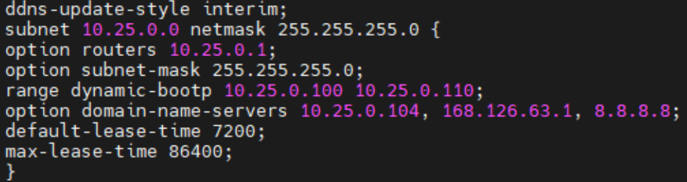
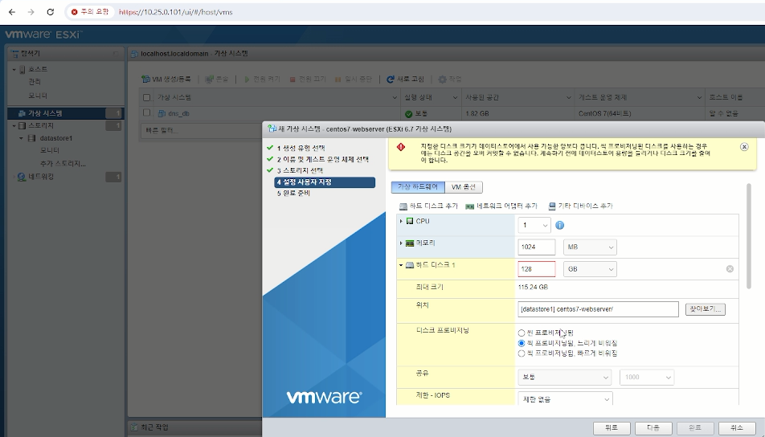
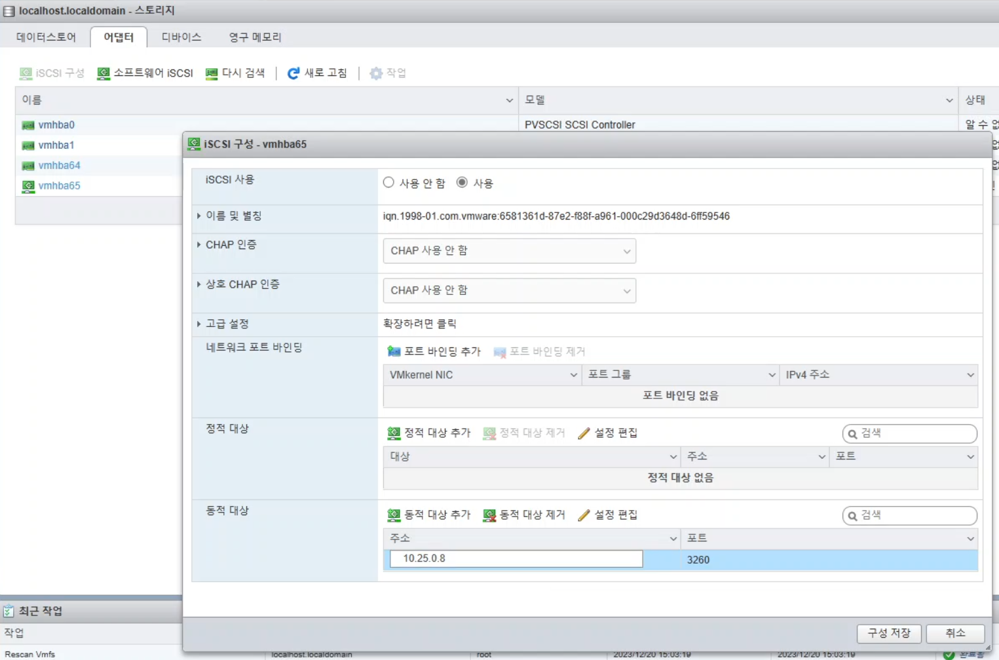
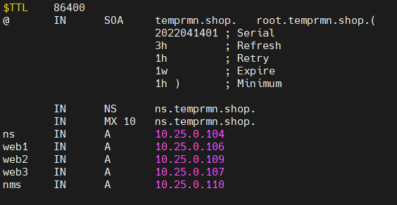
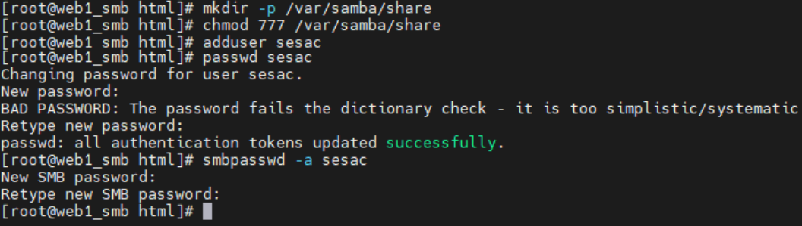
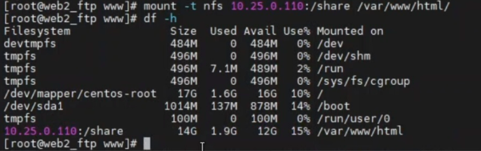
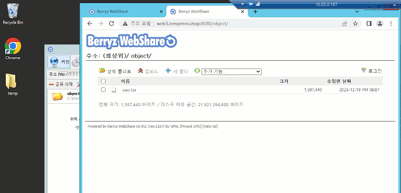
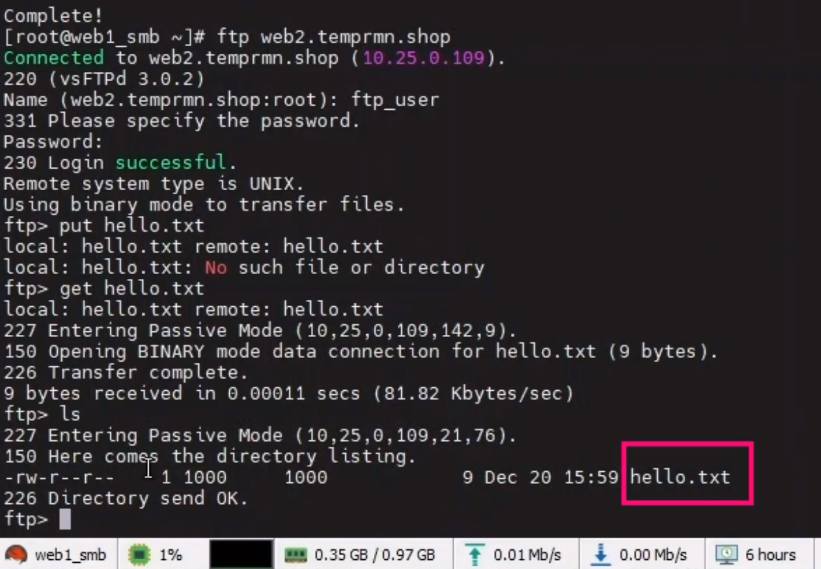
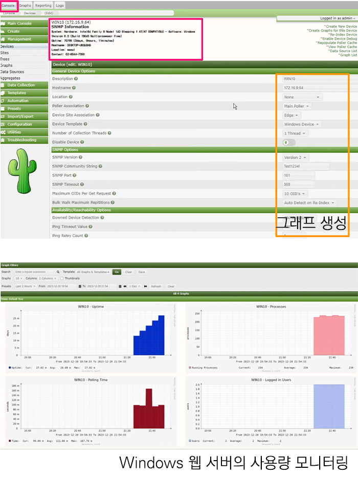

스위치로 연결된 기기들이 가상 라우터를 통해 IP를 분배받는 상황을 연출해보는 것이 저희 팀의 최우선 과제였습니다. 이를 위해 실제 물리 스위치와 각 팀원의 PC를 랜선으로 연결해주었습니다.
가상 라우터에서 Private IP 할당
vRouter에서 DHCP을 통해 각 기기에 Private IP 할당
팀 내 망 구축을 위해 팀원들의 PC와 ESXi에 IP를 분배해야합니다. vRouter가 물리 스위치로부터 받는 IP를 static으로 고정하고, 랜카드에 대한 네트워크 설정을 마친 후,vRouter에서 DHCP 데몬을 설치 및 실행하였습니다.
물리 스위치 랜카드에 대한 네트워크 설정은 Private으로 해두어서 팀원들의 PC와 ESXi에는 Private IP가 할당되었습니다. ESXi는 물리 스위치의 랜카드를 연결했기 때문에 외부에서는 접근할 수 없고, 물리 스위치로 연결된 팀원의 PC만 접근할 수 있게 되었습니다.

담당자: 최정은
ESXi 상에서 VM 및 iSCSI 구축
물리 스위치 랜카드를 연결한 기기들은 ESXi 위에서 VM 생성 및 접근이 가능
모든 팀원의 PC와 ESXi는 물리 스위치 랜카드를 연결하였고, 가상 라우터를 통해서 상호 접근이 가능한 Private IP가 분배되었습니다.
이는 ESXi는 담당 팀원의 PC에서 설치되었지만, 담당 팀원을 제외한 다른 팀원들의 PC에서도 ESXi GUI에 접근이 가능해졌음을 의미합니다.
모든 팀원은 ESXi 상에 가상 머신(VM)을 생성할 수 있고, ESXi 상에 생성된 임의의 VM을 실행하고 종료할 수 있습니다.
iSCSI는 TCP/IP 네트워크를 이용해 스토리지와 컴퓨터 간 블록 데이터 전송을 가능하게 해주는 네트워크 프로토콜 입니다.
상대적으로 단순하고 구축 비용이 낮다는 장점이 있습니다. 이 장점이 규모가 작은 저희 프로젝트에 적합하다고 판단해 도입하기로 결정했습니다.


담당자: 서인수(iSCSI/VM), 엄준호(VM), 조민지(VM)
웹 서버와 DNS 관리
서버 개수 증가에 따른 DNS 관리
앞서, ESXi 상에서 VM을 생성할 수 있다는 것을 확인했습니다. 팀원들은 각자가 맡은 업무를 수행하기 위해, VM 상에서 웹 서버를 구축하였습니다.
하지만, 서버의 개수가 늘어나면서, 팀원들이 일일히 IP를 작성하여 각 서버에 접근하는 것이 불편해지기 시작했습니다. 불편함을 해결하기 위해 임시로 사용할 도메인을 구매하고, 그 도메인을 통해 각 서버에 접속하려고 합니다.
도메인에 서브 도메인을 붙여서 각 서버를 식별했습니다. 예를 들어, 구매한 도메인이 temprmn.shop이고, 첫 번째 웹 서버에 접근하려고 합니다.
그러기 위해서 도메인에 web1.이라는 서브 도메인을 추가해서, web1.temprmn.shop 형식의 도메인을 통해 첫 번째 웹 서버에 접속할 수 있도록 temprmn.shop.db 파일을 작성했습니다.
모든 서버의 정보를 저장한 다음, name 데몬을 실행하고, dns 서비스를 방화벽에 추가합니다. 이제 이전보다 편리하게 각 서버에 접속할 수 있게 되었습니다.

담당자: 서인수(DNS VM), 엄준호(웹 서버 VM), 조민지(웹 서버 VM)
내부 파일 공유 시스템 구축
NFS, Samba, Berryz Webshare, FTP를 활용해, 팀 내부에서 파일을 공유
원활하고 안전한 협업을 위해서, 팀 내 망에서만 사용할 파일 공유 시스템을 구축해보려고 합니다. 하지만, 저희는 CentOS(Linux)와 Windows 두 가지의 OS를 사용해 웹 서버를 구축했습니다.
파일 공유 시스템 중에서는 여러 종류의 OS를 지원하지 않는 경우가 있기 때문에, 상황에 맞는 파일 공유 시스템을 채택해야합니다.
모든 팀원들과 파일을 공유할 수 있는지 파악해보기 위해서, 다양한 파일 공유 시스템을 경험해보았습니다.




담당자: 엄준호(Samba, Berryz Webshare), 조민지(NFS, FTP)
네트워크 모니터링
Cacti에서 네트워크를 모니터링
서버 실행에 문제는 없는지, 모니터링을 해보려고 합니다.
NMS(Network Monitoring System)는 컴퓨터 네트워크 또는 네크워크들을 모니터링하고 관리하는데 사용되며, 문제점들을 사후 조치하거나 관리까지 총괄합니다.
NMS의 기능들은 아래처럼 5가지로 분류할 수 있습니다.
NMS의 5대 기능(FCAPS)
1. 결함 관리(Fault): 결함을 탐지하고 사용자에게 알려 신속하게 결함을 해결하는 일
2. 구성 관리(Configuration): 네트워크 통신망을 구성하고 있는 통신장비, 프로그램 등을 파악하여 관리하고 경우에 맞게 재구성하는 일
3. 회계 관리(Accounting): 사용자의 네트워크 자원의 사용 비용을 알려주고 측정하는 일
4. 성능 관리(Performance): 네트워크 운용에 관한 분석을 통하여 향후 수요 예측과 네트워크 운용의 최적화 등을 관리하는 일
5. 보안 관리(Security): 통신망과 통신장비에 대한 접근 제어와 보안 서비스 등을 관리하는 일
저희 팀은 모니터링 도구로 상대적으로 인터페이스가 단순하고, 원하는 정보의 그래프만 배치하여 확인할 수 있는 Cacti를 채택했습니다.
아래는 Windows 서버를 모니터링 중인 사진입니다.

담당자: 조민지
로드밸런싱
가상 라우터에서 HAProxy를 통해 로드밸런싱을 진행
팀원이 디자인한 웹 페이지를 배포하려고 합니다. 하지만, 한 개의 서버만을 사용하여 배포하면, 서버가 다운되면 복구 시까지 웹 페이지를 서비스 할 수 없게 됩니다.
그래서 여러 개의 서버에 웹 페이지를 설치하고, 로드밸런싱을 통해 서비스의 고 가용성을 보장해주려고 합니다.
로드밸런싱을 위해 HAProxy를 사용하려고 합니다. HAProxy는 TCP(L4)와 HTTP(L7) 프로토콜을 모두 지원하는 오픈소스 솔루션으로, 로드밸런싱과 프록시 기능을 제공합니다.
저희는 동일한 도메인, 포트에서 웹 페이지가 실행되도록 하기 위해, L7에서 로드밸런싱되도록 설정했고, 스케줄링 방식은 라운드 로빈을 채택했습니다.
아래 사진처럼 로드밸런싱이 잘 되는 것을 확인할 수 있었습니다.
(확인을 위해 임의로 페이지에 숫자를 표기했습니다.)